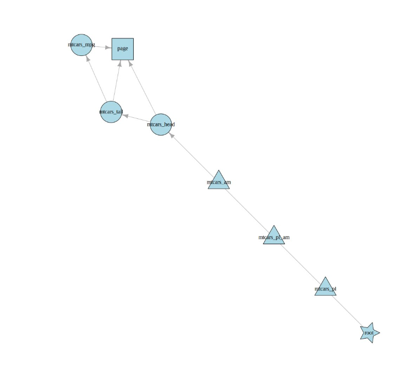

library(rixpress)
d0 <- rxp_py_file(
name = mtcars_pl,
path = 'data/mtcars.csv',
read_function = "lambda x: polars.read_csv(x, separator='|')",
nix_env = "py-env.nix"
)
d1 <- rxp_py(
# reticulate doesn't support polars DFs yet, so need to convert
# first to pandas DF
name = mtcars_pl_am,
py_expr = "mtcars_pl.filter(polars.col('am') == 1).to_pandas()",
nix_env = "py-env.nix"
)
d2 <- rxp_py2r(
name = mtcars_am,
expr = mtcars_pl_am
)
d3 <- rxp_r(
name = mtcars_head,
expr = my_head(mtcars_am),
additional_files = "functions.R"
)
d4 <- rxp_r(
name = mtcars_tail,
expr = tail(mtcars_head)
)
d5 <- rxp_r(
name = mtcars_mpg,
expr = dplyr::select(mtcars_tail, mpg)
)
doc <- rxp_quarto(
name = page,
qmd_file = "page.qmd",
additional_files = c("content.qmd", "images"),
nix_env = "quarto-env.nix"
)
rxp_list <- list(d0, d1, d2, d3, d4, d5, doc)
rixpress(rxp_list, project_path = ".")
plot_dag()Announcing rixpress
R
nix
As I’ve already discussed in this vignette of my {rix} package, it is very easy to run a {targets} pipeline inside of a Nix environment for increased reproduciblity. The main drawback of {targets} though, is that it is not possible to compute one particular object in one particular environment, and another object in another environment. It is also not possible to compute a target using Python for instance, unless you use {reticulate}.
But we can go a step further: you see, Nix is a very versatile tool, and the Nix programming language is a domain-specific language made to package software. If you assume that, say, a statistical or machine learning model is just software, then why not use Nix to build it? This thought is what made me want to write {rixpress}.
rixpress, a package to define reproducible analytical pipelines
The Nix programming language is a domain specific language used to package and build software, and “software” can have a very broad definition. As I explored in this blog post, Nix (the programming language) can be used to define a polyglot pipeline to build, for example, a Quarto report using R and Python. I have now built a package called {rixpress} which is heavily inspired by {targets} (if you are not familiar with {targets}, I introduce it at the end of this blog post) to generate such pipelines and build them using Nix. Below is a complete example which starts by using Python and the Polars library to load a dataset, then transforms it a bit, and converts the data to a Pandas dataframe then passes it to R (conversion is done via reticulate::py_load_object() under the hood, also why I had to convert the Polars dataframe to a Pandas dataframe) and finally compiles a Quarto document (you can find the code here):
Let’s go through this code:
d0 <- rxp_py_file(
name = mtcars_pl,
path = 'data/mtcars.csv',
read_function = "lambda x: polars.read_csv(x, separator='|')",
nix_env = "py-env.nix"
)rxp_py_file() uses Python to load a local file. In this case, it’s the mtcars.csv dataset under the data/ folder. The read function must be a function of only one parameter, the path to the data, so I use an anonymous function wrapping polars.read_csv which allows me to set the separator to the unix pipe |. Also, this code is executed inside the environment defined by the py-env.nix file. This file can be generated by my other package, {rix} and lists the Python packages needed (you’ll find it in the repo).
Then:
d1 <- rxp_py(
# reticulate doesn't support polars DFs yet, so need to convert
# first to pandas DF
name = mtcars_pl_am,
py_expr = "mtcars_pl.filter(polars.col('am') == 1).to_pandas()",
nix_env = "py-env.nix"
)rxp_py() executes Python code, and saves the output into the name argument. In this case, I filter the Polars dataframe and convert it to a Pandas dataframe. This again happens inside the environment defined by py-env.nix, it’s a pure Python env, no {reticulate} needed at this stage.
Then:
d2 <- rxp_py2r(
name = mtcars_am,
expr = mtcars_pl_am
)rxp_py2r() calls reticulate::py_load_object() to convert the Pandas dataframe to an R dataframe. We can now continue using it using R! You’ll notice that no nix_env argument is passed to this function. When no argument is provided to nix_env, the default environment, default.nix gets used. This one must always be present and in this case contains the required R packages for the pipeline.
Then:
d3 <- rxp_r(
name = mtcars_head,
expr = my_head(mtcars_am),
additional_files = "functions.R"
)This one uses an argument we don’t know yet, additional_files. It allows you to pass R scripts that define functions. In this case, functions.R contains the definition of my_head() which is used on mtcars_am.
d4 and d5 are self-explanatory, so now let’s take a look at rxp_quarto():
doc <- rxp_quarto(
name = page,
qmd_file = "page.qmd",
additional_files = c("content.qmd", "images"),
nix_env = "quarto-env.nix"
)This compiles the page.qmd document, which requires additional files: content.qmd which gets included into page.qmd and the images/ folder, that contains images required to compile the document. This file is compiled using the quarto-env.nix environment.
Putting all these derivations into a list and passing it to rixpress() doesn’t build the pipeline just yet, but generates a pipeline.nix file which is the Nix expression that will build the output, in this case our Quarto document. You can also take a look at the DAG using plot_dag():

and it’s also possible to retrieve objects in an interactive sessions using rxp_read() (to read them) or rxp_load() (to load them in the global environment). When reading or loading Python objects, this will get converted using {reticulate} on the fly.
To build the pipeline, run rxp_make(). Subsequent runs don’t build everything, as intermediary outputs are cached in the Nix store. So if you change only the Quarto document, only this one derivation gets built anew. It is also possible to export and import the outputs using export_nix_archive() and import_nix_archive(), pretty useful for CI!
Caveats
This package is still in the prototype stage, so don’t use it for anything serious. There are still some things I need to work on, for now debugging a faulty pipeline is really hard because intermediary outputs are difficult to find if the pipeline wasn’t completely built.
Also, due to how Nix works, every computation happens in a completely isolated sandbox. This is why the rxp_*() functions have that additional_files argument, because in case something external is required, Nix needs to copy it over into the sandbox. This means also that functions that require Internet access to work will fail. But I was able to work around that for rxp_file(): so if a resource is online, the function that reads it should be able to get to it.
Now, let me introduce {targets}, my main source of inspiration for this package
The targets package, my source of inspiration for rixpress
I’m a huge fan of the {targets} package and think that it’s truly one of the best packages ever made. No other build/pipeline automation tool comes close in my opinion. Most of these tools require you to define your pipeline in another language (such as yaml) or force you to use some very specific syntax where you explicitely need to define the objects to compute, their inputs and outputs. But {targets} allows you to define your pipeline as a series of R calls:
# _targets.R file
library(targets)
library(tarchetypes)
tar_source()
tar_option_set(packages = c("readr", "dplyr", "ggplot2"))
list(
tar_target(file, "data.csv", format = "file"),
tar_target(data, get_data(file)),
tar_target(model, fit_model(data)),
tar_target(plot, plot_model(model, data))
)This may look foreign to many R users, but if you look closely, you’ll realise that most of this code is boilerplate:
# _targets.R file
library(targets)
library(tarchetypes)
tar_source()
tar_option_set(packages = c("readr", "dplyr", "ggplot2"))
list(
tar_target(....),
tar_target(....),
tar_target(....),
tar_target(....)
)and what matters is defined inside the tar_target() functions. Remove the boilerplate, and you end up with essentially correct R code, after a few adjustments:
file <- "data.csv"
data <- get_data(file)
model <- fit_model(data)
plot <- plot_model(model, data)but why go through the trouble of using {targets}? Well, the biggest reason is that {targets} figures out the dependencies between the objects you want to compute, and caches them. So in the example above, if you only change the code of the fit_model() function, only model and plot are re-computed. But if you change file and point the path to an updated data.csv file, then everything gets computed anew. Watch the intro video from the official walkthrough for a visual explanation: but trust me, {targets} is in this class of tools that make you wonder how you could possibly have gotten anything done before using it.
Conclusion
I think that {rixpress} can become quite an useful package, so I will likely submit it for rOpenSci peer review in due time.
And thanks to Grant McDermott for suggesting the name “rixpress”!